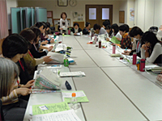
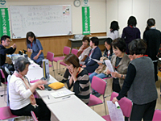

- 【日 時】
- 4月17日(火)10:30～14:00
- 【場 所】
- さいたまコープコーププラザ大宮3階会議室
- 【出席者】
- 34人(会長・さいたまコープ・さいたま高齢協・さいたま住宅生協・医療生協さいたま・パルシステム埼玉・埼玉県勤労者生協・事務局)、(お手伝い：医療生協さいたま 職員1名・組合員4名)
1．ミニ学習会『防犯のまちづくり』 講師：埼玉県防犯・交通安全課より
- 埼玉県内犯罪の現状・・・昭和60年から平成16年にかけて約3倍に増加。その後、地域での防犯活動などの犯罪対策を進めたところ、7年間で約45％減少しました。
- 自転車盗・・・盗んだ自転車でひったくり等犯罪に使用するケースが多くあります。
- 自転車・自動車・住宅侵入盗等、子どもの安全対策等・・・住んでいるまちを防犯の視点から見直す。近所付き合い、見回り、声かけ、子どもの通学時間に合わせての散歩、庭掃除、買い物等、日常生活に防犯の視点をプラスする。防犯ステッカー、清掃活動、花いっぱい運動、除草や植木の剪定等も有効です。
2．各生協の2012年度活動交流

＜さいたまコープ＞
被災者支援の活動を、心をよせあいできることをこれからも続けていきます。
＜パルシステム埼玉＞
3つのエリア、5つの委員会で活動。組合員が楽しみながら参加できます。
＜埼玉県勤労者生協＞
福祉は募金活動を行っています。共済はインターネット利用で便利になりました。
＜さいたま高齢協＞
被災者の支援を続けていきます(本の寄贈等)。地域サロンを設置しました。
＜さいたま住宅生協＞
5月から組合員対象でアンケート調査(要望などについて)を行います。
＜医療生協さいたま＞
おおみや診療所の紹介等。震災復興支援ウォークイベントのお誘い。
3．生協ネットワーク協議会2011年度まとめ(案)と2012年度活動計画(案)
4．おすすめ商品のご紹介
宮城県産めかぶ(復興支援 石巻・丸ほ保原商店)、アルミパウチ入りミックスビーンズ・北海道産大豆・北海道産黒豆・スイートコーン
5．健康チェック
血圧、血管年齢、尿チェック

ё～感 想～ё
- 犯行を未然に防ぐためにも近所の方とのコミュニケーションが大切だと感じました。
- ｢自分だけは大丈夫｣だという甘い気持ちがありました。
声かけの効果は多くの人に知ってもらいたいです。 - 他生協の活動を知ることで、広い視野で見ることができ良かったです。活動報告や交流はためになりました。今後に生かしていきたいです。